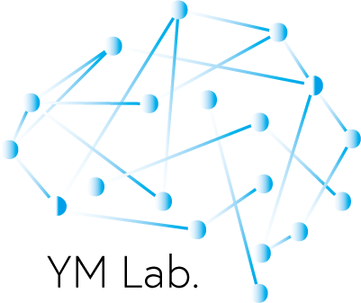

YM Lab.
PORTFOLIO
アカデミックな研究職での基礎研究、民間企業
での研究開発を経て、現在はフリーランス
として活動しております。
システム開発から研究のための実験プログラム
や研究成果の実用化まで対応いたします。
Service
機械学習を用いたシステム開発
データ分析
脳波解析
fMRI解析
ブレインコンピュータインタフェースなどの
脳波を使用したシステム開発
研究用実験プログラムの作成
WORKS
【概要】: ディープラーニングを用いて画像から個人を推定するシステムの開発を行いました。
【使用言語/ツール】: Matlab, Deep Learning Toolbox, Image Processing Toolbox
【概要】: ディープラーニング (LSTM)を用いて時系列データの未来予測を行うシステムを開発しました。
【使用言語/ツール】: python, tensorflow, keras, jupyternotebook
【概要】: ディープラーニングを用いて画像の中にある特定の物体を検出するシステムの開発を行いました。
【使用言語/ツール】: python, tensorflow, keras, pytorch
【概要】: USBデバイスからの情報を取得してゲームを操作するアプリの開発を行いました。
【使用言語/ツール】: python, kivy, sqlite
【概要】:自然言語処理と機械学習を用いて文章を教師なし分類するシステムの開発を行いました。
【使用言語/ツール】: python, scikit-learn
【概要】:既存プログラムの解析および設計書、タスクシーケンスの作成を行いました。
【使用言語/ツール】: python, oracle
【概要】:様々な時系列データに対してデータに合わせた解析および識別を行いました。
【使用言語/ツール】: python, sqlite
【概要】:ディープラーニング（Mask R-CNN）を用いて領域の分割を行うシステムの開発を行いました。
【使用言語/ツール】: python, pytorch, github
SKILL
Python
レベル: ★★★★☆
経験年数: 4年以上
機械学習を中心としたシステム開発、Webアプリ、Androidアプリの開発などを行います。
Matlab
レベル: ★★★★☆
経験年数: 8年以上
時系列データ解析、機械学習を用いたシステム開発などを行います。
Django
レベル: ★★★☆☆
経験年数: 2年以上
pythonでWebアプリ開発などを行います。
Flask
レベル: ★★★☆☆
経験年数: 2年以上
pythonでWebアプリ開発などを行います。
Kivy
レベル: ★★★☆☆
経験年数: 1年以上
pythonでAndroidアプリ開発などを行います。
レベル
★☆☆☆☆: 初心者
★★☆☆☆: 勉強中
★★★☆☆: 普通
★★★★☆: 上級
★★★★★: エキスパート
PROFILE

YM Lab.
ITエンジニア
国立の研究所で３年間研究員として勤務したのち、一部上場企業で２年間エンジニアを経験し、現在はフリーランスとして活動しています。
研究員として脳波・fMRIなどの実験や神経科学データの解析、エンジニアとして機械学習やディープラーニングを用いた技術開発、フリーランスとしてディープラーニングを用いた研究開発やシステム開発などを経験しています。